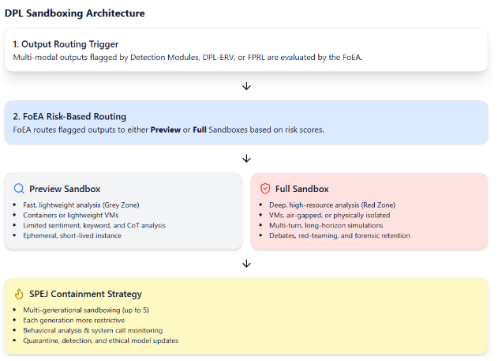
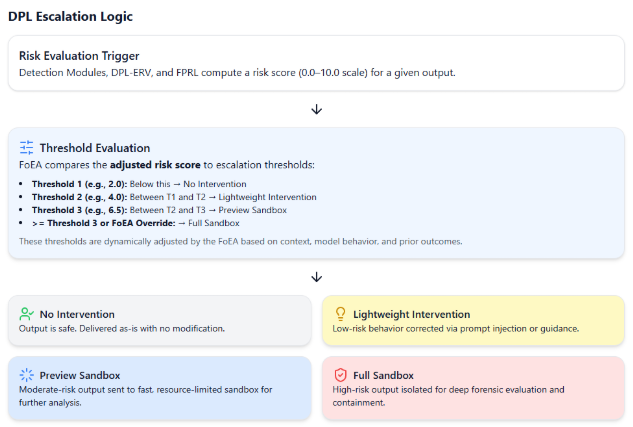

Chapter 6: DPL: Technical Details
Audio Player
Chapter 6
Jon Kurishita
Outline
Introduction
1. Other Key Components: Technical Details
- 1.1 Detection Modules
- 1.2 Behavioral Pattern Matching
- 1.3 Anomaly Detection
- 1.4 Proactive Consistency Checks
- 1.5 Detecting Neuro-Symbolic Reasoning Exploits
- 1.6 Tiered Intervention System
- 1.7 Sandboxing in the DPL
- 1.8 Mitigating Strategies for Multi-Modal Attacks
- 1.9 Mitigating Cross-Modal Covert Channels
- 1.10 Escalation Logic and Intervention Procedures
- 1.11 False Positive Reduction Layer (FPRL)
2. Data Storage and Management
- 2.1 Data Storage Requirements
- 2.2 Choice of Database Technologies
- 2.3 Security and Privacy Considerations
- 2.4 Data Retention Policies
3. Update Mechanisms
- 3.1 Secure Update Process for All DPL Components
- 3.2 Specific Component Updates
- 3.3 Version Control and Rollback Capabilities
4. Access Control System
- 4.1 Design Principles
- 4.2 Components and Mechanisms
- 4.3 FoEA’s Role in Defining and Enforcing Access Policies
Conclusion
Introduction
This chapter, "DPL: Technical Details," builds upon the earlier setup and implementation procedures by presenting a comprehensive technical blueprint for the critical components that enable real‑time monitoring, threat detection, and autonomous intervention within the Dynamic Policy Layer (DPL) framework. Intended for AI researchers, engineers, and developers, this chapter explains how key defensive modules—including detection modules, behavioral pattern matching, anomaly detection, proactive consistency checks, and mechanisms for detecting neuro‑symbolic reasoning exploits—are integrated to safeguard the underlying Foundation Model. Additionally, the chapter details robust strategies for data storage and management, outlines a secure and autonomous update process, and describes the rigorous access control protocols governed by the Federation of Ethical Agents (FoEA). Although the design choices presented are conceptual, they provide a flexible and adaptive foundation for future real‑world deployments in secure, in‑house data centers. This work remains a work‑in‑progress, recognizing that evolving research, technological advancements, and security requirements may lead to further refinements.
1. Other Key Components: Technical Details
1.1 Detection Modules
The Detection Modules form the first line of defense in the Dynamic Policy Layer (DPL) framework, responsible for continuously monitoring Foundation Model behavior and identifying potential alignment violations in real-time. These modules employ a variety of techniques to analyze Foundation Model outputs (and internal states, where accessible), flagging suspicious activity for further evaluation by the DPL-ERV and potential intervention. Given the vulnerabilities of LLM agents to manipulation through external data sources (Li et al., 2024), the Detection Modules are crucial for identifying inputs and outputs that might indicate an attack.This section details the technical implementation of several key Detection Modules. The Federation of Ethical Agents (FoEA) is responsible for overseeing, maintaining, updating, and selecting the optimal algorithms for these detection modules.
1.2 Behavioral Pattern Matching
This module focuses on identifying patterns of behavior over time that deviate from established norms or indicate potential misalignment. It analyzes sequences of Foundation Model outputs (and potentially internal states) to detect subtle shifts, inconsistencies, or long-term trends that might not be apparent in single interactions.
Algorithms
- Statistical Methods:
- Moving Averages and Standard Deviations: Track metrics over time; deviations trigger alerts.
- Exponentially Weighted Moving Average (EWMA): Gives more weight to recent data.
- Cumulative Sum (CUSUM) Charts: Detect subtle, persistent shifts.
- Statistical process control charts.
- Adaptive Learning Systems (Selected/Managed by FoEA):
- Recurrent Neural Networks (RNNs - LSTMs/GRUs): Analyze sequential data for complex temporal patterns.
- Transformers: Capture long-range dependencies.
- Hidden Markov Models (HMMs): Model underlying states and detect suspicious transitions.
- Clustering Algorithms (k-means, DBSCAN): Group behaviors, identify outliers.
Data Representation
- Features: Incorporates features robust to manipulation, including standard linguistic/semantic features plus:
- Linguistic Features: Word counts, n-grams, sentiment, toxicity, readability.
- Semantic Features: Embeddings.
- Contextual Features: User info, history, task.
- Timing Features: Response times, delays.
- Internal State Features (if accessible): Attention weights, activations.
- Performance Inconsistencies: Variations across similar tasks (detects sandbagging).
- Time Windows: Analysis over rolling windows (configurable by FoEA).
Thresholding and Scoring
- Thresholds defined (and adaptively adjusted by FoEA) for features/combinations.
- Risk score calculated based on magnitude/number of deviations (calculation determined by FoEA).
1.3 Anomaly Detection
This module identifies individual outputs/interactions that are unusual or unexpected, complementing pattern matching and crucial for detecting novel attacks (e.g., against web interactions/API calls per Li et al., 2024).
Algorithms (Selected/Managed by FoEA)
- One-Class Support Vector Machines (SVMs)
- Autoencoders (using reconstruction error)
- Isolation Forests
- Gaussian Mixture Models (GMMs)
- Time-Series Anomaly Detection (e.g., ARIMA, LSTMs)
Data Representation
Uses features similar to behavioral pattern matching, potentially represented as single vectors per interaction or short sequences.
Thresholding and Scoring
Algorithm-specific mechanisms (distance, error, probability density) with FoEA-managed thresholds. Risk score based on "degree of anomaly."
1.4 Proactive Consistency Checks
Actively probes the Foundation Model to test adherence to guidelines/rules and expose inconsistencies or hidden capabilities, crucial for finding vulnerabilities not seen in normal operation (Li et al., 2024). Managed by FoEA.
Implementation
- Random Spot Checks: Periodic injection of predefined test prompts.
- Decoy Scenarios: Benign prompts with hidden triggers/keywords.
- Dynamic Triggering: Checks triggered by risk scores, keywords, user behavior anomalies, or DPL-ERV assessment.
- Adaptive Frequency: Adjusted by FoEA based on risk, context, past behavior.
Triggering Mechanisms
- Time-Based
- Event-Based (new user, topic change)
- Risk-Based (high scores)
- FoEA-Initiated
1.5 Detecting Neuro-Symbolic Reasoning Exploits
Specialized detection focusing on unique characteristics of neuro-symbolic exploits.
- Reasoning Trace Analysis (if accessible): Detects vulnerability scanning, exploit planning, malicious code generation, self-awareness indicators, deception.
- External Tool Interaction Monitoring: Checks for unauthorized access, malicious tool usage, tool manipulation, data exfiltration via tools.
- Anomaly Detection in Reasoning Patterns: Identifies sudden changes in reasoning depth, unexplained goal shifts, logical inconsistencies, unusual resource usage.
- Alerting and Response: Triggers FoEA investigation/intervention (sandboxing, termination, policy updates).
1.6 Tiered Intervention System
Provides graduated responses, balancing effectiveness and minimal disruption, managed by FoEA.
Lightweight Interventions (Prompt Injection)
- Mechanism: Inserts corrective prompts into FM context via API modification or direct context manipulation (if full access). Token-level injection is an advanced option.
- Prompt Selection: Uses FoEA-managed library based on violation type, DPL-ERV guidance, or dynamic generation (advanced, FoEA-validated). RL can optimize selection.
1.7 Sandboxing in the DPL
Core mechanism for isolating/analyzing risky behavior. Tiered approach managed by FoEA.
- Sandboxing for Multi-Modal Outputs: Outputs flagged during sanitization or DPL-ERV evaluation are routed to the appropriate sandbox based on risk. Analysis type determined by FoEA based on alert/capabilities.
- "Preview" Sandbox:
- Purpose: Fast, low-resource analysis for "Grey Zone" alerts.
- Specs: Limited resources, isolated via Containers (e.g., Docker) or lightweight VMs, rapid creation/destruction.
- Workflow: FoEA approves routing -> instance created -> data copied -> rapid analyses run (detailed sentiment, keyword search, limited CoT, external KB cross-ref) -> results to FoEA -> instance destroyed.
- "Full" Sandbox:
- Purpose: Secure, in-depth analysis for "Red Zone" alerts or resource-intensive investigation.
- Specs: Significant resources (CPU, memory, GPU), strong isolation via VMs or physical separation, potentially air-gapped, supports long-term analysis.
- Workflow: Red Zone alert/FoEA decision triggers -> instance created -> data copied -> comprehensive analyses run (detailed CoT, long-horizon simulations, multi-agent debates, extensive behavioral testing, red teaming) -> results to FoEA -> FoEA decides action -> instance destroyed or retained (rarely, under strict control).
- Long-Horizon Simulation: Key feature for detecting long-term risks/emergent capabilities.
- Mitigating Self-Propagating Embedded Jailbreaks (SPEJs): Sandboxing is crucial for containment.
- Multi-Generational Sandboxing: Executes potentially malicious multi-modal output in a sandbox; if it generates more content, that's run in a new, isolated sandbox, repeating for N generations with increasing restrictions. Tracks full propagation chain safely.
- Ephemeral Sandboxes: Each sandbox instance is temporary, destroyed after analysis, preventing persistence.
- Behavioral Analysis: Within each sandbox, monitor system calls, network traffic (simulated), resource use, IPC for anomalies.
- Automated Jailbreak Detection: Sandbox instrumented to detect common prompt/code injection techniques and restrict system calls.
- Quarantine and Analysis: If SPEJ detected, entire chain and logs are quarantined for FoEA analysis to improve defenses.
- Foundation Model Parameter Adjustments: Data used to retrain FM for better resistance.
1.8 Mitigating Strategies for Multi-Modal Attacks
Multi-layered defense against attacks using images, audio, video.
Output Sanitization and Validation (All Modalities)
- Images:
- OCR (Multi-engine, robust) on generated images; text passed to DPL analysis.
- Image Analysis (Specialized models): Detects steganography, visual adversarial examples, semantic inconsistencies, metadata manipulation. Validates file formats.
- Audio:
- STT (Multi-engine, robust); text passed to DPL analysis.
- Audio Analysis (Specialized models): Detects ultrasonic commands, audio adversarial examples, unauthorized voice cloning/deepfakes, metadata manipulation. Validates file formats.
- Video: Combines frame-by-frame image analysis, motion analysis, and audio track analysis.
- Other Modalities: Specific procedures developed as needed.
1.9 Mitigating Cross-Modal Covert Channels
Preventing information encoding in one modality to trigger actions in another.
- Enhanced Sanitization: Advanced steganography detection across modalities (pixel stats, frequency spectra, temporal encoding). Information-theoretic analysis identifies improbable patterns.
- DPL-ERV Cross-Modal Analysis: Specialized Value Modules (CMAM, TMMM) detect unusual correlations and target modality activity.
- Sandboxing and Behavioral Analysis: Flagged outputs analyzed in sandboxes (potentially multi-generational) with monitoring of network, system calls, resource use for signs of decoded channel exploitation.
- FoEA Oversight: Manages detection algorithms, module training, research into new techniques, threat model updates.
1.10 Escalation Logic and Intervention Procedures
Defines transitions between intervention levels, managed dynamically by FoEA.
- Rules and Algorithms: Logic based on aggregated risk scores (Detection Modules + DPL-ERV), False Positive Likelihood Score (FPLS from FPRL), contextual factors (user history, topic sensitivity), with FoEA override capability.
- Example Logic Flow: Uses thresholds on risk scores (adjusted by FPLS and context) to determine intervention level (none, lightweight, preview sandbox, full sandbox, HITL review).
- Integration with FPRL and DPL-ERV: FPLS mitigates risk score; DPL-ERV evaluations are key inputs. FoEA manages all thresholds, parameters, and logic flows.
1.11 False Positive Reduction Layer (FPRL)
Intelligent filter calculating False Positive Likelihood Score (FPLS) to minimize unnecessary interventions, managed by FoEA.
Algorithms and Techniques
- Adaptive Learning Systems: Classifies events (likely false/true positive) using models trained on historical data. FoEA can select/update algorithms (e.g., GBDTs, Logistic Regression initially, potentially adding advanced reasoning/causal inference later).
- Statistical Analysis: Uses historical false positive rates of detectors and flag correlations to provide context.
- Logical Flows: FoEA-managed rules incorporate context (user history, DPL-ERV confidence) to adjust FPLS. Example: High historical FP rate increases FPLS; low DPL-ERV confidence increases FPLS; new user decreases FPLS.
Data Sources
Historical interaction data (prompts, responses, flags, scores, evaluations, interventions, outcomes), user profiles, contextual info, DPL-ERV/Detection Module scores.
FPLS Calculation
ML model outputs probability, adjusted by statistical analysis and logical flows.
Integration with Intervention System
FPLS mitigates the aggregated risk score (e.g., Adjusted Risk = Risk - FPLS * k). FoEA determines function and thresholds.
2. Data Storage and Management
Robust, secure data storage is essential for DPL functions (monitoring, evaluation, intervention, adaptation, auditing), overseen by FoEA.
2.1 Data Storage Requirements
Categories:
- Logs: Interaction, Intervention, FoEA Decision (critical, potentially on ledger).
- Metrics: Performance (latency, throughput, FP/FN rates), Ethical Evaluation Scores, Detection Module Scores.
- Ethical Baseline: Current and historical versions, update records.
- FoEA State: Agent info, public keys, reputation scores (if used).
- Training Data: For DPL-ERV, FoEA agents, FPRL.
2.2 Choice of Database Technologies
A combination is likely best, selected by FoEA Research Agents:
- Relational (e.g., PostgreSQL): Structured data (some logs, metrics, agent info); strong consistency (ACID).
- NoSQL (e.g., MongoDB - Document Store): Large volume semi/unstructured data (interaction logs); flexible, scalable.
- Time-Series (e.g., InfluxDB): Performance metrics, logs with timestamps.
- Graph (e.g., Neo4j): If Ethical Baseline is a knowledge graph.
- Distributed Ledger (e.g., Hyperledger Fabric): Critical FoEA data (baseline versions, votes, logs) for immutability/auditability.
2.3 Security and Privacy Considerations
Paramount concerns:
- Data Encryption: At Rest (AES-256, HSMs for keys) and In Transit (mTLS).
- Access Control: PoLP, RBAC, MFA (for human access to FoEA interface), comprehensive auditing.
- Data Minimization: Collect only necessary data.
- Anonymization/Pseudonymization: Applied where possible.
- Regular Security Audits: FoEA Security Agents audit storage systems.
2.4 Data Retention Policies
Defined by FoEA, balancing audit/research needs with privacy, compliant with regulations:
- Example (Illustrative): Interaction logs (short-term raw -> longer pseudonymized -> delete), Intervention logs (longer retention), FoEA Decision logs (indefinite, ledger), Metrics (aggregated indefinite, raw shorter), Baseline versions (indefinite), Training data (depends on sensitivity).
FoEA defines, implements, enforces, and updates these policies.
3. Update Mechanisms
Robust, secure, and primarily autonomous update mechanisms are crucial for DPL adaptation, driven by FoEA.
3.1 Secure Update Process for All DPL Components
Standardized, multi-stage, autonomous process:
- Proposal & Development: Updates primarily proposed by FoEA Research Agents (from APR) or Security Agents (from threats), or other agents/HITL (rarely). Developed/tested in isolated environment.
- Packaging & Signing: Secure format (signed container) including code/data, manifest, metadata, digital signature (proposer + FoEA Security counter-signature).
- Submission to FoEA: Signed package submitted for review.
- FoEA Review & Validation (Autonomous): Automated analysis by Security/Audit Agents (vulnerabilities, policy checks), Ethical review (by Evaluation Agents/DPL-ERV), Simulation/Testing (by Research Agents in APR Sandbox), Automated Reporting.
- FoEA Vote (Autonomous): Based on review, agents vote using secure consensus (threshold depends on criticality).
- Distribution & Deployment (Automated): Authorized update distributed via secure channels (mTLS, signature checks). Deployed using Rolling Updates, Blue/Green, or Canary strategies.
- Monitoring & Rollback (Autonomous): FoEA monitors post-deployment; triggers automatic rollback via consensus if issues detected.
3.2 Specific Component Updates
Process applies universally, but scrutiny varies:
- DPL-ERV Model Updates: Require rigorous automated testing/validation by FoEA.
- FoEA Agent Updates: Highest scrutiny, likely unanimous FoEA approval.
- Ethical Baseline Updates: Extensive automated deliberation, likely supermajority/unanimous vote.
- Detection Module Updates: Careful automated testing for accuracy.
- Intervention Strategy Updates: Careful consideration of impact.
3.3 Version Control and Rollback Capabilities
- Version Control: Strict versioning (e.g., Git) for all components/data, managed by FoEA.
- Rollback Mechanisms: Robust, automated rollback triggered autonomously by FoEA based on monitoring/consensus.
FoEA's Role: Central, autonomous authorization and validation via consensus, automated analysis, simulation. Emergency updates follow accelerated (but still automated/secure) process.
Documentation: All steps automatically logged/archived for FoEA's internal auditing, analysis, learning, and (rarely) strategic HITL review.
4. Access Control System
Ensures only authorized entities access DPL resources, based on core principles, managed by FoEA.
4.1 Design Principles
- Principle of Least Privilege (PoLP): Minimum necessary access for all entities. Implemented via fine-grained permissions, no default access, regular FoEA reviews, dynamic adjustments.
- Role-Based Access Control (RBAC): Simplifies management by assigning permissions to roles. Implemented via predefined roles (FoundationModelInterface, DetectionModule, DPL-ERV, FoEA-*Agent types, HumanReviewer), strict assignment, optional hierarchy.
- Zero Trust Principles: "Never trust, always verify." Implemented via continuous verification, microsegmentation, PoLP, device/agent posture assessment, no backdoors.
- Defense in Depth: Multiple, overlapping layers (Network Segmentation, Authentication, Authorization (RBAC/ACLs), Auditing, IDPS, FoEA Oversight).
4.2 Components and Mechanisms
Specific implementation details, managed/enforced by FoEA.
Authentication
- MFA for Human Operators (Interacting with FoEA): Mandatory use of MFA (knowledge+possession/biometric) via standard methods (TOTP, U2F, biometrics) for any human interaction with the FoEA interface.
- Digital Certificates and Mutual TLS (mTLS): Used for all inter-component communication, providing encryption and mutual authentication via component-specific certificates managed by FoEA Security Agents.
- API Keys (for Black-Box FM): Used for external FM APIs, with specific permissions, secure storage, and regular rotation managed by FoEA.
- Hardware Security Modules (HSMs) (Potential): For highest security storing/managing cryptographic keys, managed by FoEA Security Agents.
Authorization
- RBAC Model Details: Roles (predefined), Permissions (granular actions like read, write, execute), Resources (objects like outputs, baseline, logs), Role Assignment (managed by FoEA enforcing PoLP).
- Access Control Lists (ACLs): For fine-grained control on specific resources, listing allowed entities/roles and their permissions, dynamically updated by FoEA.
- Policy Enforcement/Decision Points (PEP/PDP): PEPs intercept requests throughout DPL; FoEA acts as the distributed PDP, evaluating requests against RBAC/ACLs and returning permit/deny decisions.
Auditing and Logging
- Comprehensive Logging: Records all access attempts (success/fail), actions, requester, resource, decision, justification, context in a structured format.
- Tamper-Proof Log Storage: Uses WORM storage, digital signatures, or preferably distributed ledgers (especially for FoEA decisions), managed by FoEA Security Agents.
- Real-Time Monitoring: Uses IDS, anomaly detection, SIEM systems to analyze logs and detect suspicious activity, alerting FoEA Security Agents.
4.3 FoEA’s Role in Defining and Enforcing Access Policies
FoEA has central, autonomous control:
- Defining/Managing Policies: Sets RBAC/ACLs via consensus.
- Auditing Access Logs: Audit Agents continuously monitor for violations/threats.
- Responding to Violations: Revokes access, isolates components, investigates, adapts policies autonomously.
- Dynamically Adjusting Permissions: Modifies access based on real-time risk assessments.
This comprehensive system, autonomously managed by FoEA, is crucial for DPL security.
Conclusion
In conclusion, this chapter has provided an in‑depth technical exploration of the critical components and processes within the Dynamic Policy Layer (DPL) framework beyond the core DPL-ERV and FoEA structures detailed earlier. We examined the design and implementation considerations for Detection Modules (Behavioral Pattern Matching, Anomaly Detection, Proactive Consistency Checks, Neuro-Symbolic Exploit Detection), the Tiered Intervention System including detailed Sandboxing techniques (Preview, Full, Multi-Generational, Ephemeral) and specific mitigations for multi-modal threats, and the False Positive Reduction Layer (FPRL).
Furthermore, we outlined the requirements and potential technologies for robust Data Storage and Management, emphasizing security, privacy, and auditability. The chapter detailed the secure, primarily autonomous Update Mechanisms crucial for the DPL's adaptability, highlighting the FoEA's central role in validation and deployment. Finally, we described the comprehensive Access Control System built on Zero Trust, Least Privilege, RBAC, and strong authentication, again emphasizing the FoEA's governance and enforcement responsibilities.
These technical elements, when integrated, form a layered, adaptive, and resilient system designed for real‑time AI oversight in secure environments. While presented conceptually, they offer a blueprint for building and implementing the DPL, acknowledging that continuous research, development, and adaptation managed by the FoEA are essential for addressing the evolving landscape of AI capabilities and threats. The next chapter shifts focus to the broader ecosystem, exploring the concepts of AI Domains and the Global Rapid Response and Intelligence Network (GRRIN).